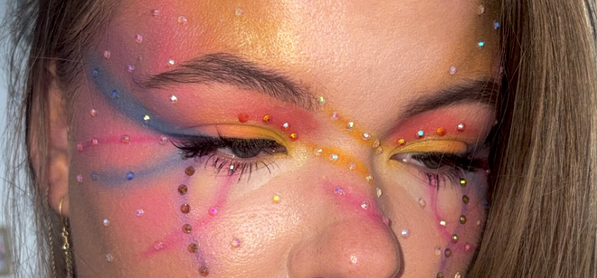
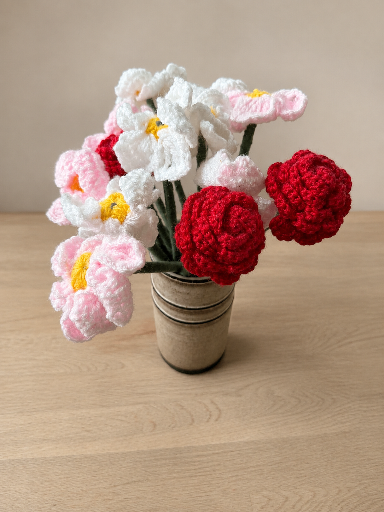
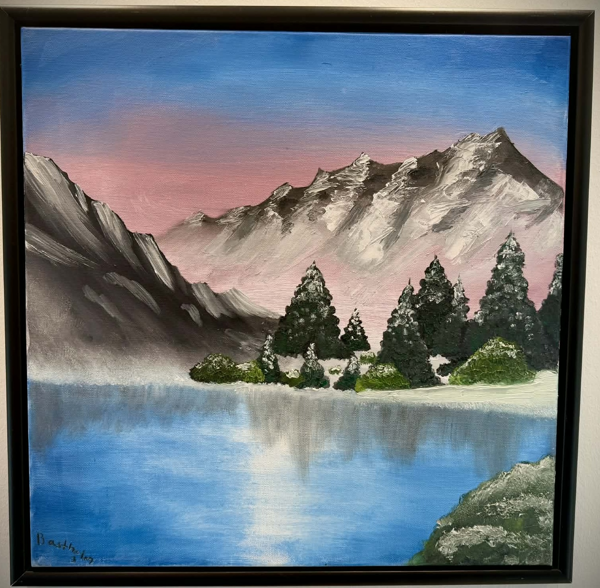
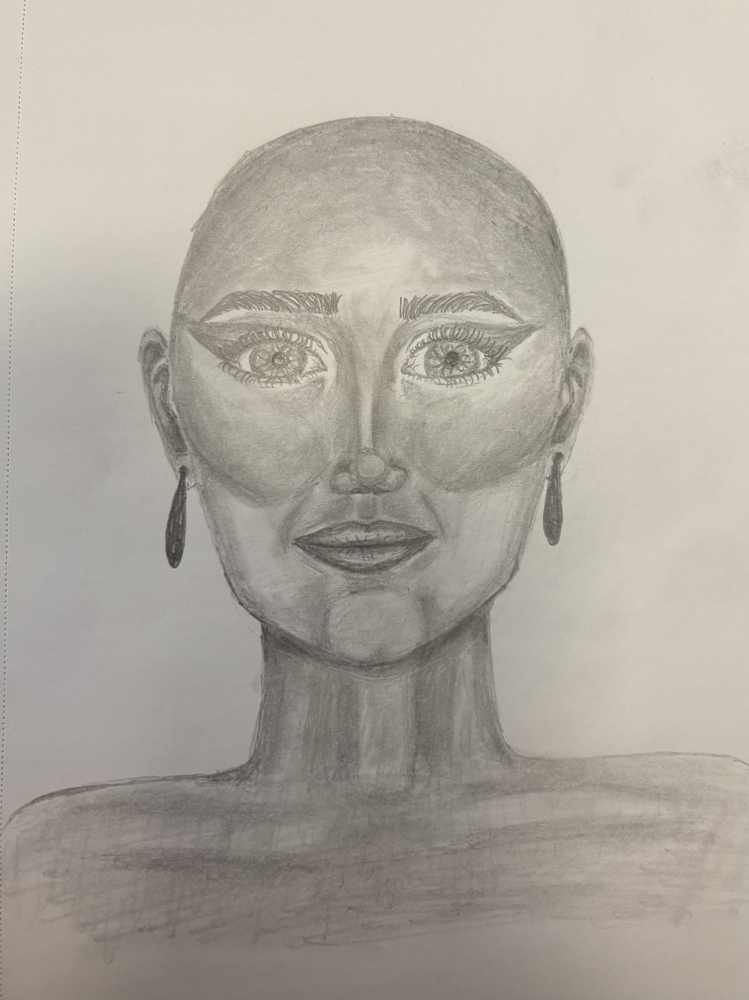
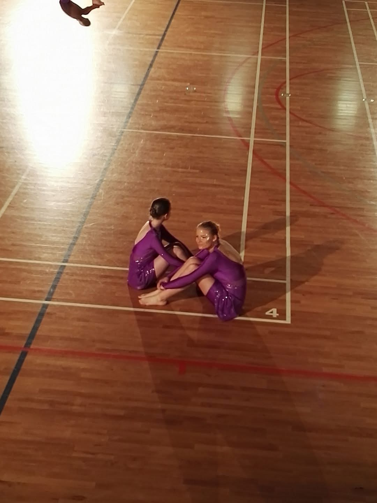

About me

Hi, I’m Melina Søndergaard Bastholm
I’m a Multimedia Design student with a strong interest in both design and development. I enjoy working across the creative process, from ideas and visual concepts to UI/UX design and development.
I focus on creating digital experiences that balance aesthetics, functionality and usability. I’m always curious to explore new tools, technologies and creative approaches while continuing to develop my skills.
View my CVMy creative side
I have always been very creative in many different ways, from dancing, sewing, knitting, painting and drawing to coloring, experimenting with makeup and much more. Below, you’ll find a little collage of some of the things I have been working on in my spare time.




